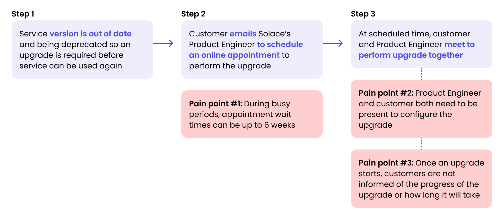
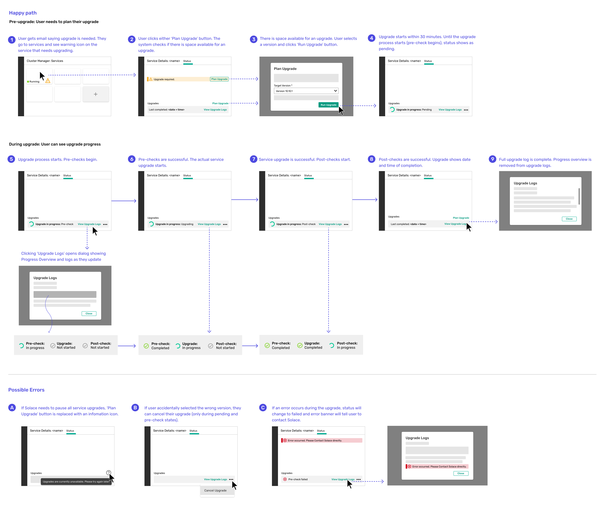
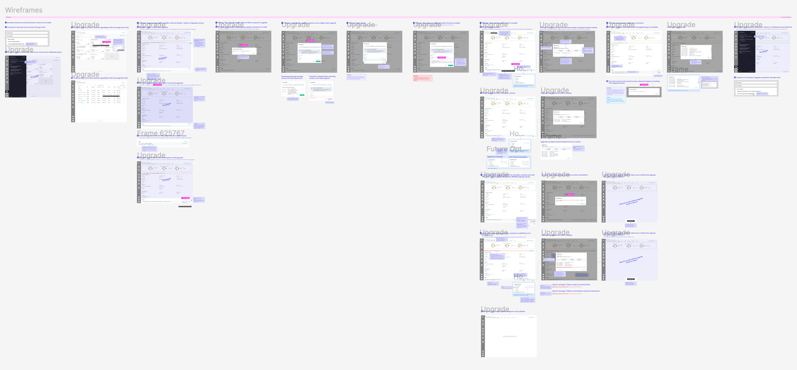
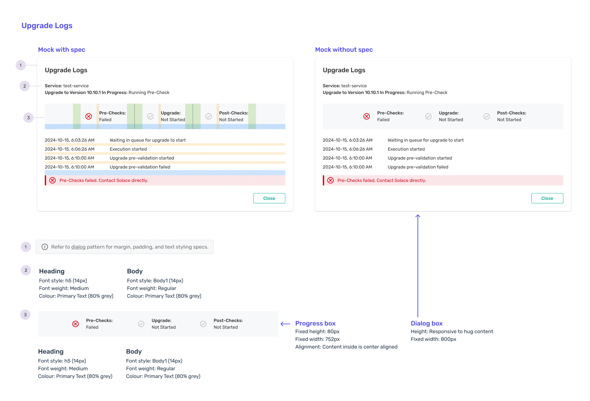

Team
Jenna Foreman
(UX Manager)
My Roles
Interaction Design
UX Design
Tools
Figma
Timeline
2 months
(Nov 2024 - Dec 2025)
Overview
During my co-op at Solace, I designed a customer-triggered upgrade feature, including UIs, screen interactions, and visual specs, while validating designs through weekly reviews and presented the final design to stakeholders, receiving highly positive feedback and approval.
Problem Statement
Solace customers are frustrated by delays and lack of visibility in service upgrades.
The service upgrade process is currently manual and requires appointment scheduling between customers and Product Engineers. When versions are deprecated, this coordination can cause delays of up to 6 weeks. Additionally, once the upgrade starts, limited progress feedback creates uncertainty for customers.
Solution
Automated, self-triggered upgrades with visual status tracking.
Automating self-triggered upgrades with visual progress tracking gives customers control and keeps them informed, reducing wait times and uncertainty while easing the workload for Product Engineers.
Demo of Newly Released Feature
Before getting into the design process, this is a preview showcasing the final implemented design:

Discovery
Current Upgrade Process
Define
Problem Framing
How might we improve efficiency and visibility of the upgrade process in order to reduce wait times and uncertainty for customers and reduce workload for Product Engineers?
Ideate
User Flows
After meeting with the product owner and lead developer to align on the key requirements, business goals, user goals, and technical limitations, I created high level flows to map out the interactions needed for the user to complete the upgrade. Based on feedback, this was the final flow chosen:
Interaction Design
I created detailed high-fidelity wireframes with annotated design rationale to illustrate user interactions during the upgrade process. The wireframes covered the full flow, including feature discovery, decision pathways, error states, and completion messages.
Throughout multiple iterations, I refined the design based on feedback in review sessions with the UX team, product owner, and developers. Collaborating with cross-functional teams helped me balance differing perspectives from design, development, and business sides in my final designs.
Prototype
Key Design Decisions
Key Design Decisions (1/5)
Initiating the Upgrade
Upgrades are currently manual, with the upgrades area displaying only the latest version information and no interactivity. To give customers more control, a 'Plan Upgrade' button and notification banners were added to introduce this new feature.
Key Design Decisions (2/5)
Configuring and Triggering the Upgrade
Due to a capacity limit, customers can only upgrade if space is available after clicking the ‘Plan Upgrade’ button. If room is available, they can select their target version and receive the necessary information to make an informed decision. If no space is available, they’ll be notified to try again later.
Key Design Decisions (3/5)
Showing Upgrade Progress
Currently, the upgrade progress is hidden from customers. To reduce uncertainty, we added a live upgrade log with status updates reflecting the internal process. While the steps are more complex internally, they were grouped into 3 steps (pre-checks, upgrades, and post-checks) to make the progress tracker more user-friendly.
Key Design Decisions (4/5)
Communicating Upgrade Errors
Errors may occur during pre-checks, upgrades, and post-checks at various severity levels. Error message banners have been added with suggested actions to resolve issues, and Product Engineers are notified if the error is unable to be fixed by the customer themselves.
Key Design Decisions (5/5)
Confirming Upgrade Success
When the upgrade is successful, customers are notified with dismissible banners, a completed upgrade log, and a timestamp of completion. The Plan Upgrade button is kept for consistency, but if triggered again, informs the customer that their version is already up to date.
Developer Handoff
Visual Specifications to Ensure Smooth Handoff
In addition to detailed annotations on the design mocks, I included a page with detailed specifications about font, colours, and spacing in order to ensure a smooth handoff to developers. This is an example of one of the visual specs created for the upgrade log, one of the new elements of the feature.
Impact and Next Steps
This new customer-triggered upgrade feature was just released last month and aims to improve efficiency by reducing Product Engineers' workload to assisting during error states only, while offering customers quicker and more transparent upgrades.
The MVP has been released internally at Solace, and we are currently gathering feedback from internal employees for improvements. I am currently working on the next phase of the feature, which involves adding a scheduling component for more predictable upgrades.
Final Takeaways
What I learned...
1) Cross-functional teams bring diverse perspectives.
Reviewing my work with designers, product owners, and engineers, helped me gain diverse perspectives throughout the project and as a designer, I learned to balance business needs, user needs, and technical limitations to find the best solution.
2) Know your audience when presenting.
I presented to UX, product owners, and developers throughout the project, learning to adjust the level of detail, context, and questions in my presentations to suit each audience. With practice, I received positive feedback and approval during my final stakeholder presentation, concluding the project on a high note.